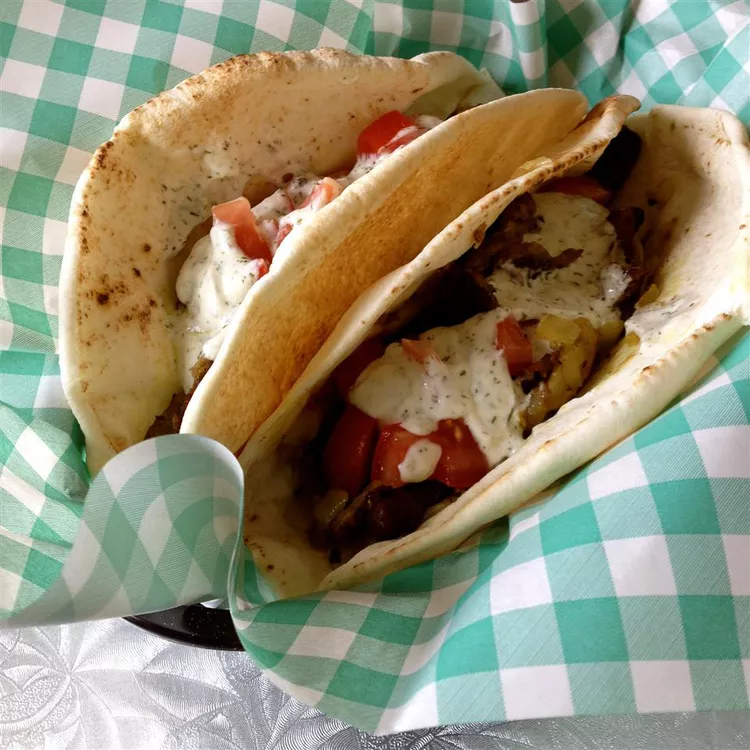

Kebab

Description:
This is RACHEY638's version of Turkish kebabs which's made 'off the cuff' after searching unsuccessfully for a recipe online. The original sandwiches are made from meat that is pressed into a loaf and grilled on a rotating spit. The meat is shaved off as it gets crispy and then put into a pita sandwich.
Her recipe calls for thin slices of meat to be marinated and then broiled to get the same effect without a huge rotating grill. Serve in a warmed pita with goat cheese, tzatziki sauce, lettuce, tomatoes, onions, and pepperoncinis.
Ingredients
Marinade:
- 2 large onions, chopped
- 2 garlic cloves, crushed
- half a cup of olive oil
- 2 tablespoons of lemon juice
- 1 teaspoon dried oregano
- 1 teaspoon ground balack pepper
- half a teaspoon of ground turmeric
- 1 pinch of curry powder
- 1 teaspoon of salt
- 1 pound of beef flank steak, thinly sliced
Tzatziki Sauce:
- 8 ounces of sour cream
- 2 tablespoons of olive oil
- 1 tablespoon of lemon juice
- half a teaspoon of salt
- half a teaspoon of ground black pepper
- 1 tablespoon of choped fresh dill
- 1 clove of garlic, crushed
- 6 pita bread rounds
Steps
- Place the chopped onions in a large ceramic bowl and crush with the bottom of a glass until juice is rendered and onions look translucent. Stir in 2 crushed garlic cloves, 1/2 cup olive oil, 2 tablespoons lemon juice, oregano, 1 teaspoon black pepper, turmeric, curry powder, and 1 teaspoon salt. Mix well; add the sliced beef and toss to coat. Cover the bowl with plastic wrap, and marinate in the refrigerator overnight.
- Combine the sour cream, 2 tablespoons olive oil, 1 tablespoon lemon juice, 1/2 teaspoon salt, 1/2 teaspoon black pepper, dill, and 1 crushed clove of garlic. Mix well; cover the bowl with plastic wrap and refrigerate overnight.
- Preheat the oven's broiler and set the oven rack about 6 inches from the heat source.
- Remove the meat from the marinade mixture, brushing off extra onions. Spread the slices on a baking sheet without overlapping, and salt to taste. Broil about 3 minutes per side or until browned and crispy, turning halfway through cooking.
- Divide the cooked meat between the pita breads, and drizzle with tzatziki sauce to serve.